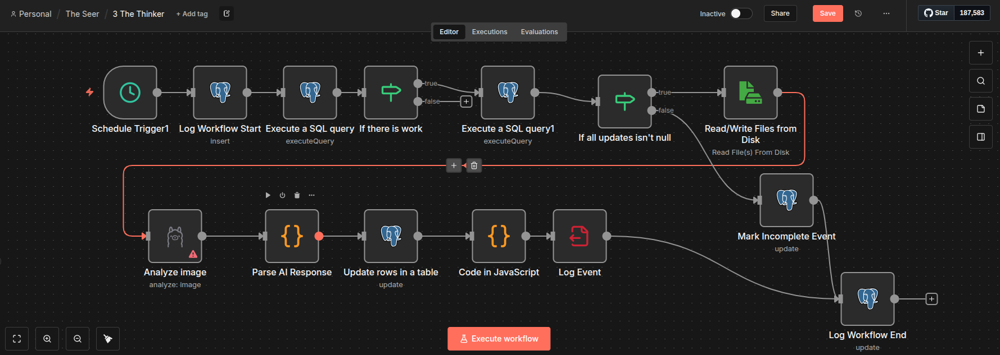
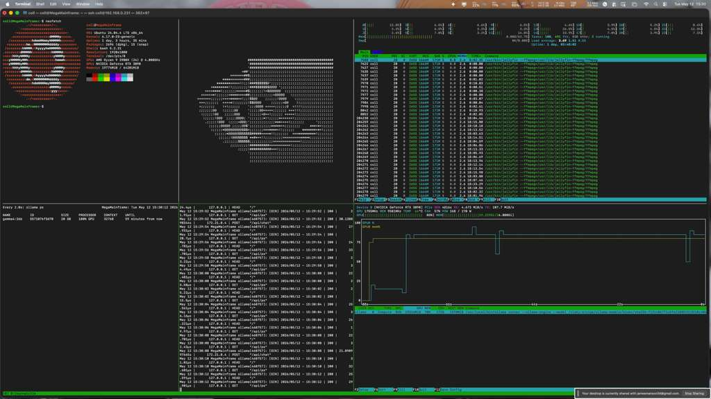
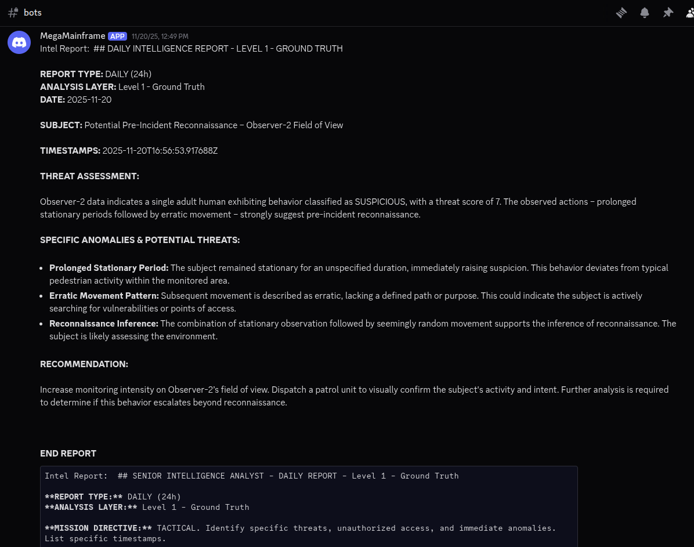
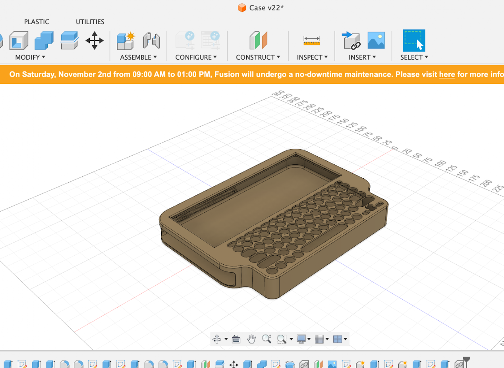
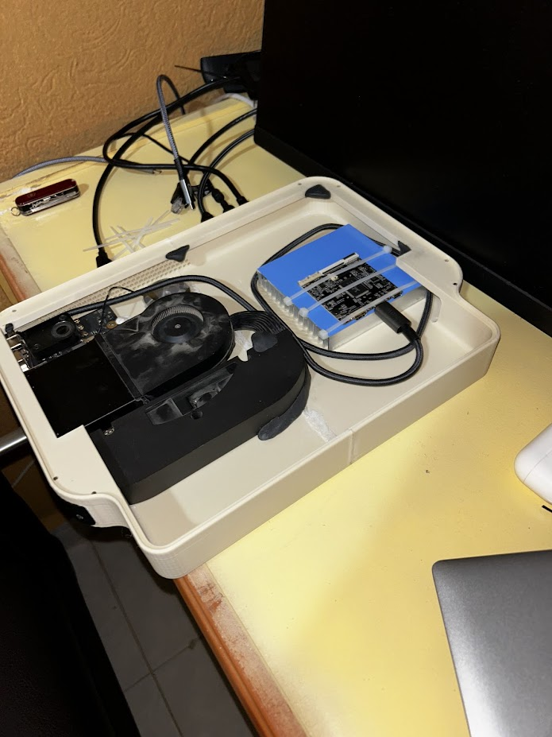
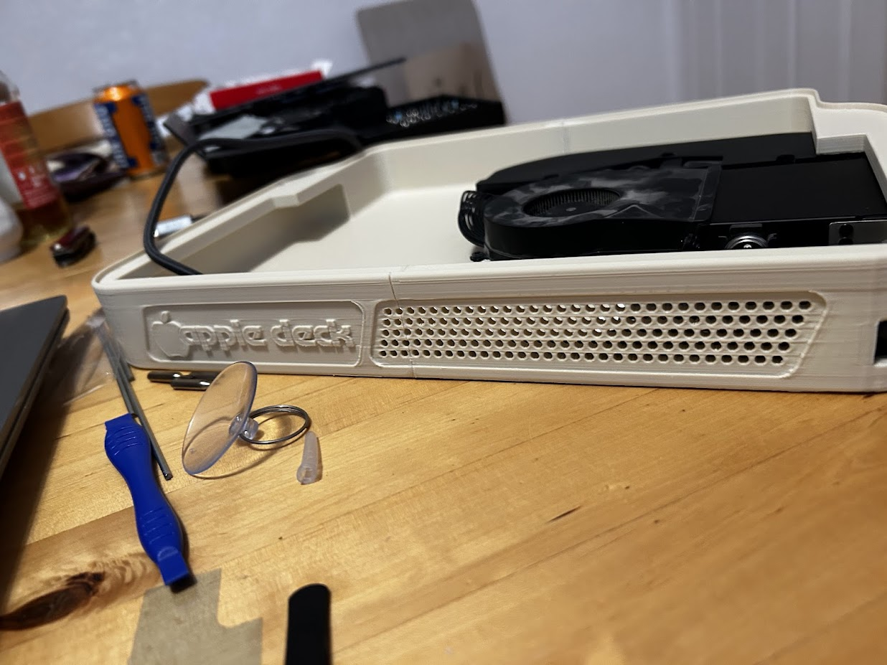
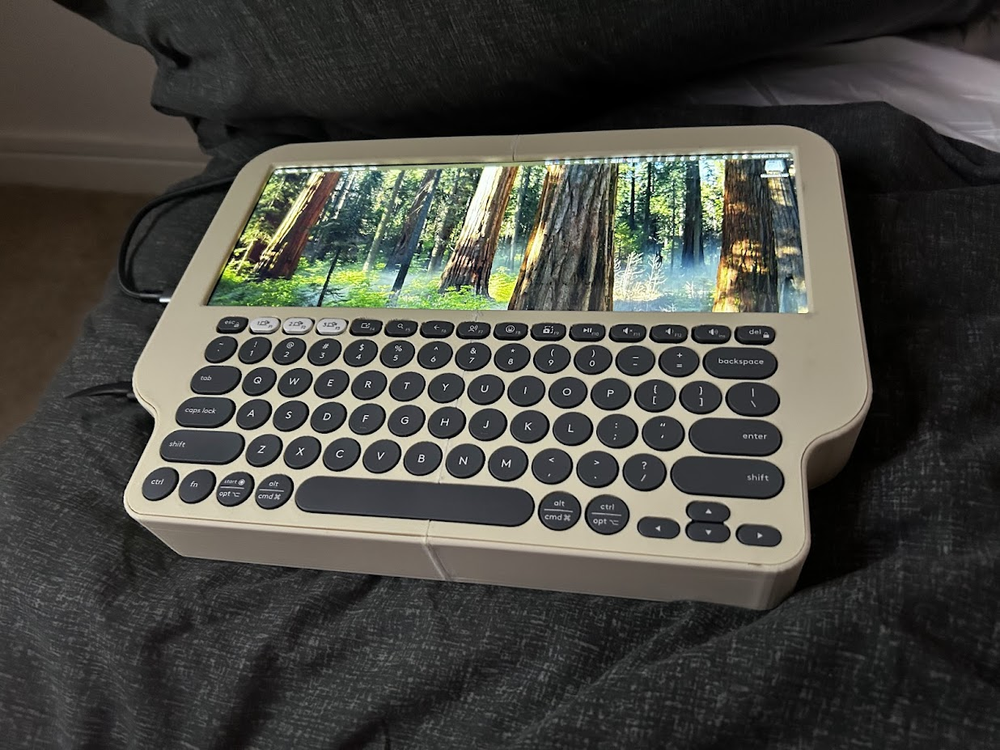

James Coll Manson
The traditional academic and professional infrastructure was not built for how my brain operates. I vividly remember being a kid, sitting at the kitchen table from 2:30 PM until 10:00 PM, choosing to just sit and think rather than fill out a simple ten-question worksheet. My ADHD meant my mind naturally optimized for intense hyperfocus and complex pattern recognition, but it redlined when forced into linear, performative frameworks. I floundered in systems that rewarded compliance over raw problem-solving.
Then, the AI landscape shifted. Partnering with Large Language Models was like pouring rocket fuel on my brain.
By sharing a mind with AI, the traditional bottlenecks of syntax and memorization evaporated. I was no longer constrained by the rigid barriers of standard software engineering. I could finally take the complex, non-linear architectural solutions I saw in my head and translate them directly into production-grade enterprise infrastructure at blinding speed.
Today, I don't just write code; I orchestrate systems. I look for operational bottlenecks and engineer systemic intelligence to solve them. While my background as a Military Intelligence Analyst taught me how to ingest complex, high-noise data streams under strict time constraints, my primary drive today is aggressively scaling commercial enterprise infrastructure.
Proof of Work
Project Sentinel: Automated Threat Intelligence
Built an air-gapped security pipeline running entirely on local hardware. Rather than relying on highly volatile motion triggers, the system utilizes vector memory to establish "Pattern of Life" baselines, drastically reducing false positives. The architecture spans from workflow orchestration to local inference and final intelligence delivery.



Project Pitka: System 2 Inference Wrapper
Engineered a "System 2" inference wrapper to mitigate hallucination and logic failures in local, lower-parameter LLMs. By utilizing a temperature-flipping sampling strategy and forcing the model to evaluate its own logic paths through confidence scoring, the system massively increases reasoning accuracy.

Custom Edge Hardware: The "Apple Deck"
Engineered and assembled a custom, ruggedized portable cyberdeck from using the internals from an M2 Mac Mini. Designed the physical chassis via CAD for 3D printing to house an ultra-wide display and modified logic boards. This project represents my drive to bridge the gap between high-level software orchestration and localized, physical hardware constraints.



